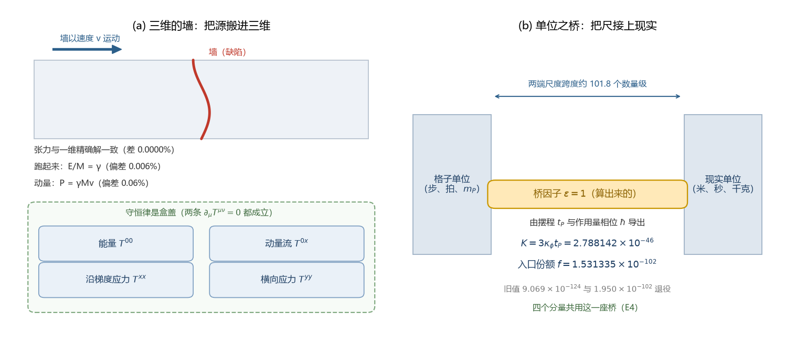

这是科普《给引力装上源和尺：三维的墙与一座单位之桥》的可交互版。左边拖速度，看墙跑起来时能量与动量怎样按相对论走；右边拖桥因子，看这座唯一换算桥为什么必须等于 1。

读数背景：E1 至 E4 三维嵌入。E1 的张力对一维精确解差 0.0000%；E2 的偏差不超过 0.006%（E/M 对 γ）与 0.06%（P 对 γMv）；E3 的四个分量嵌入与一维值乘层数一致到 3.9×10⁻¹⁶。这里的动画只示形状，数值核对在验证脚本里。
桥因子等于 1：与公理推导（MB-1）一致，四个分量共用这一座桥（E4）。把滑杆拖离 1，看两端怎样立刻接不上。
| 结论 | 档位 |
|---|---|
| 三维张力与一维精确解一致（E1） | 可复现数值 |
| E/M = γ 与 P = γMv（E2） | 可复现数值 |
| 四分量接入源项与两条守恒律（E3） | 可复现数值 |
| 桥因子 ε = 1（MB-1） | 代数恒等式 |
| 惯性 2π 与缺口色散逐位一致（MB-9） | 代数恒等式 |
| K 与 f 的定稿值、两项裁决 | 条件性命题 |
| 孤子即粒子（0.6506 MeV 与轻子谱不对齐） | 未完成 |
数值与判据来源：C1 三维嵌入 E1 至 E4、量纲桥 MB-1 至 MB-9 与两次裁决（M-E、M-F）；科普原文见《给引力装上源和尺：三维的墙与一座单位之桥》，总图为 images/wall_and_bridge_schematic.png。